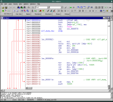
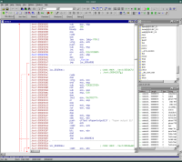
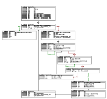
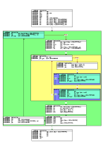
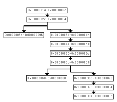
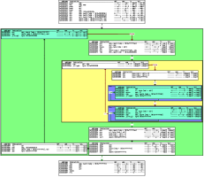
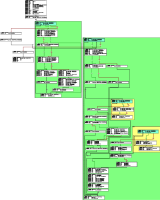

|
 |
 |
 |
 |
 |
 |
| Vanilla CFG of quicksort function | same CFG of quicksort with four detected loops. Makes the CFG much more structured | Dominator tree of quicksort functions' basic blocks | All graph features: CFG, live regs and marked loops |
 |
|||
| New method of marking loops (clustered subgraphs) |
| Version | Comment |
|---|---|
| 0.4.13 | Last version for the next three month. Add experimental instruction swapping (-w option). Fix bugs in the dataflow engine. Improve manpage. |
| 0.4.12 | Add opaque conditional basic block splitting (-O option, but automatically enabled with -s). Add -A all-round automatic obfuscation option. |
| 0.4.11 | Add basic block splitting (-s option, nice in combination with -e), improved junk instruction placement and bug fixes. |
| 0.4.10 | Greatly improved junk instruction generation, more flexible encoding of instructions. Bug fixes. |
| 0.4.9 | Register/instruction usage profiling, slightly more realistic register picking for junk code. Some small bugfixes, should work well for medium-sized objects. |
| 0.4.8 | Add junk instruction insertion and an evil lot of bug fixes. |
| 0.4.5 | Finally add switch statement linearization. Add another variation of the loop detection algorithm (-N option) which follows the spirit of the Dragon book ;) |
| 0.4.4 | Add vertical ordering to loop nodes (head is on top). Change from boxed to clustered subgraphs, allowing edges to travel freely. Fix small bugs. And... still no support for switch :] |
| 0.4.3 | Add dominator trees and natural loop detection (see examples). Fixes of smaller bugs. Still no support for switch ;) |
| 0.4.1 | Fixed missing call correction and other small bugs. Should work on larger object files now, although still no support for linearization of switch statements. |
{kind=link}
{kind=link}
{kind=link}
{kind=link}
{kind=link}